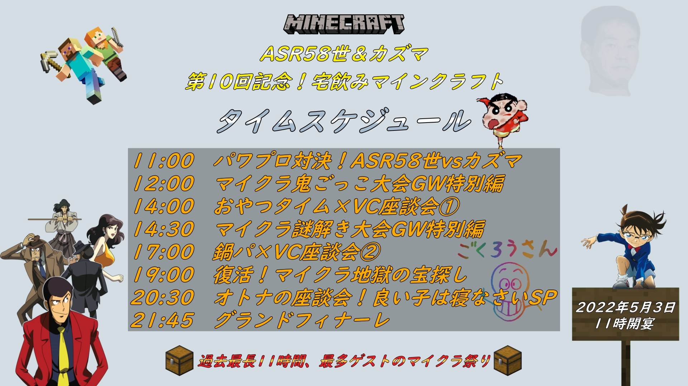

宅飲みシリーズ、打ち切りへ
4/9 2022
カテゴリー：新着情報
5月3日開催予定だった第10回宅飲み生放送中止に伴い、宅飲みシリーズそのものが打ち切りになることが決定した。
打ち切りの原因はASR58世とカズマ、二人の宅飲みシリーズに対する温度差だと言われており、詳しいことはASR58世のサブチャンネル(ASR探偵団のマイクラ事件簿ちゃんねる。)に投稿された「非常識すぎる友人、宅飲みシリーズ打ち切り」の動画で語られている。
企画自体は9割以上仕上がっており、招待予定のフレンドの参加率と企画の時間配分が決定すればすぐにでも開催できるという所まで来て突然の中止、数か月に渡る準備が一瞬で台無しになったことにショックと不満を募らせたASR58世が下した打ち切りという決断は当然の選択だったのかもしれない

予定されていた企画
- ➊ASR58世vsカズマ！パワプロ対決
- ➋マイクラ鬼ごっこGWスペシャル
- ➌おやつタイム×VC座談会
- ➍マイクラ謎解き探偵団GWスペシャル
- ➎鍋パ×VC座談会
- ➏6ヶ月ぶりの復活！地獄の宝探しツアー
- ➐しめじさん presents オトナのVC座談会
- ➑グランドフィナーレ
予定されていた企画
- ➊ASR58世vsカズマ！パワプロ対決
- ➋マイクラ鬼ごっこGWスペシャル
- ➌おやつタイム×VC座談会
- ➍マイクラ謎解き探偵団GWスペシャル
- ➎鍋パ×VC座談会
- ➏6ヶ月ぶりの復活！地獄の宝探しツアー
- ➐しめじさん presents オトナのVC座談会
- ➑グランドフィナーレ
参加・招待予定だったフレンド
- すずみねさん・しめじさん・ゆとさん・ふーさん・みーさん
- ゆーさん・ゆーくん・みーさん・ぷーさん・フリーザ様
- 雪だるまさん・ジンチさん・ルク君・やはえふあーる・Ｙさん
- 他、マイクラのプレイ経験があるASR58世のフォロワーの皆様
参加・招待予定だったフレンド
- すずみねさん・しめじさん・ゆとさん・ふーさん・みーさん・ゆーさん・ゆーくん・みーさん・ぷーさん・フリーザ様・雪だるまさん・ジンチさん・ルク君・やはえふあーる・Ｙさん
- 他、マイクラのプレイ経験があるASR58世のフォロワーの皆様